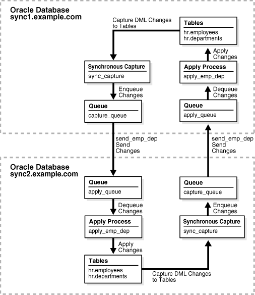
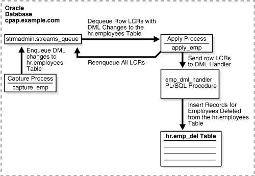

1 Introduction to Oracle Streams
This chapter briefly describes the basic concepts and terminology related to Oracle Streams. These concepts are described in more detail in other chapters in this book and in the Oracle Streams Replication Administrator's Guide.
This chapter contains these topics:
1.1 Overview of Oracle Streams
Oracle Streams enables information sharing. Using Oracle Streams, each unit of shared information is called a message, and you can share these messages in a stream. The stream can propagate information within a database or from one database to another. You specify which information is routed and the destinations to which it is routed. The result is a feature that provides greater functionality and flexibility than traditional solutions for capturing and managing messages, and sharing the messages with other databases and applications. Oracle Streams provides the capabilities needed to build and operate distributed enterprises and applications, data warehouses, and high availability solutions. You can use all of the capabilities of Oracle Streams at the same time. If your needs change, then you can implement a new capability of Oracle Streams without sacrificing existing capabilities.
Using Oracle Streams, you control what information is put into a stream, how the stream flows or is routed from database to database, what happens to messages in the stream as they flow into each database, and how the stream terminates. By configuring specific capabilities of Oracle Streams, you can address specific requirements. Based on your specifications, Oracle Streams can capture, stage, and manage messages in the database automatically, including, but not limited to, data manipulation language (DML) changes and data definition language (DDL) changes. You can also put user-defined messages into a stream, and Oracle Streams can propagate the information to other databases or applications automatically. When messages reach a destination, Oracle Streams can consume them based on your specifications.
Figure 1-1 shows the Oracle Streams information flow.
Figure 1-1 Oracle Streams Information Flow
Description of "Figure 1-1 Oracle Streams Information Flow"
1.2 What Can Oracle Streams Do?
The following sections provide an overview of what Oracle Streams can do:
1.2.1 Capture Messages at a Database
Oracle Streams provides two ways to capture database changes implicitly: capture processes and synchronous captures. A capture process can capture DML changes made to tables, schemas, or an entire database, and DDL changes. A synchronous capture can capture DML changes made to tables. Rules determine which changes are captured by a capture process or synchronous capture.
Database changes are recorded in the redo log for the database. A capture process captures changes from the redo log and formats each captured change into a message called a logical change record (LCR). The messages captured by a capture process are called captured LCRs.
A synchronous capture uses an internal mechanism to capture changes and format each captured change into an LCR. The messages captured by a synchronous capture are called persistent LCRs.
The rules used by a capture process or a synchronous capture determine which changes it captures. When changes are captured by a capture process, the database where changes are generated in the redo log is the source database. When changes are captured by a synchronous capture, the database where the synchronous capture is configured is the source database.
A capture process can capture changes locally at the source database, or it can capture changes remotely at a downstream database. A synchronous capture can only capture changes locally at the source database. Both a capture process and a synchronous capture enqueue logical change records (LCRs) into a queue. When a capture process or a synchronous capture captures changes, it is referred to as implicit capture.
Users and applications can also enqueue messages manually. These messages can be LCRs, or they can be messages of a user-defined type called user messages. When users and applications enqueue messages manually, it is referred to as explicit capture.
1.2.2 Stage Messages in a Queue
Messages are stored (or staged) in a queue. These messages can be logical change records (LCRs) or user messages. Capture processes and synchronous captures enqueue messages into an ANYDATA queue, which can stage messages of different types. Users and applications can enqueue messages into an ANYDATA queue or into a typed queue. A typed queue can stage messages of one specific type only.
1.2.3 Propagate Messages from One Queue to Another
Oracle Streams propagations can propagate messages from one queue to another. These queues can be in the same database or in different databases. Rules determine which messages are propagated by a propagation.
Oracle Streams enables you to configure an environment in which changes are shared through directed networks. In a directed network, propagated messages pass through one or more intermediate databases before arriving at a destination database where they are consumed. The messages might or might not be consumed at an intermediate database in addition to the destination database. Using Oracle Streams, you can choose which messages are propagated to each destination database, and you can specify the route messages will traverse on their way to a destination database.
1.2.4 Consume Messages
A message is consumed when it is dequeued from a queue. An apply process can dequeue messages implicitly. A user, application, or messaging client can dequeue messages explicitly. The database where messages are consumed is called the destination database. In some configurations, the source database and the destination database can be the same.
Rules determine which messages are dequeued and processed by an apply process. An apply process can apply messages directly to database objects or pass messages to custom PL/SQL subprograms for processing.
Rules determine which messages are dequeued by a messaging client. A messaging client dequeues messages when it is invoked by an application or a user.
1.2.5 Detect and Resolve Conflicts
An apply process detects conflicts automatically when directly applying LCRs in a replication environment. A conflict is a mismatch between the old values in an LCR and the expected data in a table. Typically, a conflict results when the same row in the source database and destination database is changed at approximately the same time.
When a conflict occurs, you need a mechanism to ensure that the conflict is resolved in accordance with your business rules. Oracle Streams offers a variety of prebuilt conflict handlers. Using these prebuilt handlers, you can define a conflict resolution system for each of your databases that resolves conflicts in accordance with your business rules. If you have a unique situation that prebuilt conflict resolution handlers cannot resolve, then you can build your own conflict resolution handlers.
If a conflict is not resolved, or if a handler procedure raises an error, then all messages in the transaction that raised the error are saved in the error queue for later analysis and possible reexecution.
1.2.6 Transform Messages
A rule-based transformation is any modification to a message that results when a rule in a positive rule set evaluates to TRUE. There are two types of rule-based transformations: declarative and custom.
Declarative rule-based transformations cover a set of common transformation scenarios for row LCRs, including renaming a schema, renaming a table, adding a column, renaming a column, keeping columns, and deleting a column. You specify (or declare) such a transformation using Oracle Enterprise Manager Cloud Control or a procedure in the DBMS_STREAMS_ADM package. Oracle Streams performs declarative transformations internally, without invoking PL/SQL.
A custom rule-based transformation requires a user-defined PL/SQL function to perform the transformation. Oracle Streams invokes the PL/SQL function to perform the transformation. A custom rule-based transformation can modify either LCRs or user messages. For example, a custom rule-based transformation can change the data type of a particular column in an LCR.
Either type of rule-based transformation can occur at the following times:
-
During enqueue of a message by a capture process, which can be useful for formatting a message in a manner appropriate for all destination databases
-
During propagation of a message, which can be useful for transforming a message before it is sent to a specific remote site
-
During dequeue of a message by an apply process or messaging client, which can be useful for formatting a message in a manner appropriate for a specific destination database
When a transformation is performed during apply, an apply process can apply the transformed message directly or send the transformed message to an apply handler for processing.
Note:
-
A rule must be in a positive rule set for its rule-based transformation to be invoked. A rule-based transformation specified for a rule in a negative rule set is ignored by capture processes, propagations, apply processes, and messaging clients.
-
Throughout this document, "rule-based transformation" is used when the text applies to both declarative and custom rule-based transformations. This document distinguishes between the two types of rule-based transformations when necessary.
See Also:
1.2.7 Track Messages with Oracle Streams Tags
Every redo entry in the redo log has a tag associated with it. The data type of the tag is RAW. By default, when a user or application generates redo entries, the value of the tag is NULL for each redo entry, and a NULL tag consumes no space in the redo entry. The size limit for a tag value is 2000 bytes.
In Oracle Streams, rules can have conditions relating to tag values to control the behavior of Oracle Streams clients. For example, you can use a tag to determine whether an LCR contains a change that originated in the local database or at a different database, so that you can avoid change cycling (sending an LCR back to the database where it originated). Also, you can use a tag to specify the set of destination databases for each LCR. Tags can be used for other LCR tracking purposes as well.
You can specify Oracle Streams tags for redo entries generated by a certain session or by an apply process. These tags then become part of the LCRs captured by a capture process or synchronous capture. Typically, tags are used in Oracle Streams replication environments, but you can use them whenever it is necessary to track database changes and LCRs.
1.3 What Are the Uses of Oracle Streams?
The following topics briefly describe some of the reasons for using Oracle Streams:
In some cases, Oracle Streams components provide an infrastructure for various features of Oracle.
1.3.1 Data Replication
Oracle Streams can capture data manipulation language (DML) and data definition language (DDL) changes made to database objects and replicate those changes to one or more other databases. An Oracle Streams capture process or synchronous capture captures changes made to source database objects and formats them into LCRs, which can be propagated to destination databases and then applied by Oracle Streams apply processes.
The destination databases can allow DML and DDL changes to the same database objects, and these changes might or might not be propagated to the other databases in the environment. In other words, you can configure an Oracle Streams environment with one database that propagates changes, or you can configure an environment where changes are propagated between databases bidirectionally. Also, the tables for which data is shared do not need to be identical copies at all databases. Both the structure and the contents of these tables can differ at different databases, and the information in these tables can be shared between these databases.
See Also:
-
Oracle Streams Replication Administrator's Guide for more information using Oracle Streams for replication
1.3.2 Data Warehouse Loading
Data warehouse loading is a special case of data replication. Some of the most critical tasks in creating and maintaining a data warehouse include refreshing existing data, and adding new data from the operational databases. Oracle Streams components can capture changes made to a production system and send those changes to a staging database or directly to a data warehouse or operational data store. Oracle Streams capture of redo data with a capture process avoids unnecessary overhead on the production systems. Oracle Streams provides a "one-step" procedure (DBMS_STREAMS_ADM.MAINTAIN_CHANGE_TABLE) that configures Oracle Streams to record the changes made to a table. Support for data transformations and user-defined apply procedures enables the necessary flexibility to reformat data or update warehouse-specific data fields as data is loaded.
See Also:
-
Oracle Database Data Warehousing Guide for more information about data warehouses
1.3.3 Database Availability During Upgrade and Maintenance Operations
You can use the features of Oracle Streams to achieve little or no database down time during database upgrade and maintenance operations. Maintenance operations include migrating a database to a different platform, migrating a database to a different character set, modifying database schema objects to support upgrades to user-created applications, and applying an Oracle software patch.
1.3.4 Message Queuing
Oracle Database Advanced Queuing (AQ) enables user applications to enqueue messages into a queue, propagate messages to subscribing queues, notify user applications that messages are ready for consumption, and dequeue messages at the destination. A queue can be configured to stage messages of a particular type only, or a queue can be configured as an ANYDATA queue. Messages of almost any type can be wrapped in an ANYDATA wrapper and staged in ANYDATA queues. Oracle Streams AQ supports all the standard features of message queuing systems, including multiconsumer queues, publish and subscribe, content-based routing, Internet propagation, transformations, and gateways to other messaging subsystems.
You can create a queue at a database, and applications can enqueue messages into the queue explicitly. Subscribing applications or messaging clients can dequeue messages directly from this queue. If an application is remote, then a queue can be created in a remote database that subscribes to messages published in the source queue. The destination application can dequeue messages from the remote queue. Alternatively, the destination application can dequeue messages directly from the source queue using a variety of standard protocols.
See Also:
-
Oracle Database Advanced Queuing User's Guide for more information about Oracle Streams AQ
1.3.5 Event Management and Notification
Business events are valuable communications between applications or organizations. An application can enqueue messages that represent events into a queue explicitly, or an Oracle Streams capture process or synchronous capture can capture database events and encapsulate them into messages called LCRs. These messages can be the results of DML or DDL changes. Propagations can propagate messages in a stream through multiple queues. Finally, a user application can dequeue messages explicitly, or an Oracle Streams apply process can dequeue messages implicitly. An apply process can reenqueue these messages explicitly into the same queue or a different queue if necessary.
You can configure queues to retain explicitly-enqueued messages after consumption for a specified period of time. This capability enables you to use Oracle Database Advanced Queuing (AQ) as a business event management system. Oracle Streams AQ stores all messages in the database in a transactional manner, where they can be automatically audited and tracked. You can use this audit trail to extract intelligence about the business operations.
Oracle Streams capture processes, synchronous captures, propagations, apply processes, and messaging clients perform actions based on rules. You specify which events are captured, propagated, applied, and dequeued using rules, and a built-in rules engine evaluates events based on these rules. The ability to capture events and propagate them to relevant consumers based on rules means that you can use Oracle Streams for event notification. Messages representing events can be staged in a queue and dequeued explicitly by a messaging client or an application, and then actions can be taken based on these events, which can include an e-mail notification, or passing the message to a wireless gateway for transmission to a cell phone or pager.
See Also:
-
Oracle Streams Extended Examples for a sample environment that explicitly dequeues messages
1.3.6 Data Protection
One solution for data protection is to create a local or remote copy of a production database. In the event of human error or a catastrophe, you can use the copy to resume processing.
You can use Oracle Data Guard SQL Apply, a data protection feature that uses some of the same infrastructure as Oracle Streams, to create and maintain a logical standby database, which is a logically equivalent standby copy of a production database. As in Oracle Streams replication, a capture process captures changes in the redo log and formats these changes into LCRs. These LCRs are applied at the standby databases. The standby databases are open for read/write and can include specialized indexes or other database objects. Therefore, these standby databases can be queried as updates are applied.
It is important to move the updates to the remote site as soon as possible with a logical standby database. Doing so ensures that, in the event of a failure, lost transactions are minimal. By directly and synchronously writing the redo logs at the remote database, you can achieve no data loss in the event of a disaster. At the standby system, the changes are captured and directly applied to the standby database with an apply process.
See Also:
-
Oracle Data Guard Concepts and Administration for more information about logical standby databases
1.4 Sample Oracle Streams Configurations
Each of the following sections provide an overview of a sample Oracle Streams configuration:
1.4.1 Sample Hub-and-Spoke Replication Configuration
Figure 1-2 shows a sample hub-and-spoke replication configuration. A hub-and-spoke replication configuration typically is used to distribute information to multiple target databases and to consolidate information from multiple databases to a single database.
A hub-and-spoke replication configuration is one in which a central database, or hub, communicates with one or more secondary databases, or spokes. The spokes do not communicate directly with each other. In a hub-and-spoke replication configuration, the spokes might or might not allow changes to the replicated database objects.
In the sample hub-and-spoke replication configuration shown in Figure 1-2, there is one hub database and two spoke databases. The spoke databases allow changes to the replicated database objects.
Figure 1-2 Sample Hub-and-Spoke Replication Configuration

Description of "Figure 1-2 Sample Hub-and-Spoke Replication Configuration"
For more information about this configuration, see Oracle Streams Replication Administrator's Guide.
1.4.2 Sample Replication Configuration with Downstream Capture
Figure 1-3 shows a sample replication configuration that uses a downstream capture process. Downstream capture means that the capture process runs on a remote database instead of the source database. Using downstream capture removes the capture workload from the production database.
In the sample replication configuration shown in Figure 1-3, the downstream capture process runs at the remote database dest.example.com, and the redo data is sent from the source database src.example.com to the remote database. At the remote database, a downstream capture process captures the changes in the redo data sent from the source database and an apply process applies these changes to the local database objects.
Figure 1-3 Sample Replication Configuration with Downstream Capture
Description of "Figure 1-3 Sample Replication Configuration with Downstream Capture"
For more information about this configuration, see Oracle Streams Replication Administrator's Guide.
1.4.3 Sample Replication Configuration That Uses Synchronous Captures
Figure 1-4 shows a sample replication configuration that uses synchronous captures to capture changes instead of capture processes. You can use a synchronous capture replication configuration to replicate changes to tables with infrequent data changes in a highly active database or in situations where capturing changes from the redo logs is not possible.
Figure 1-4 Sample Replication Configuration with Synchronous Captures
Description of "Figure 1-4 Sample Replication Configuration with Synchronous Captures"
For more information about this configuration, see Oracle Streams Replication Administrator's Guide.
1.4.4 Sample N-Way Replication Configuration
Figure 1-5 shows a sample n-way replication configuration. An n-way replication configuration typically is used in an environment with several peer databases and each database must replicate data with each of the other databases. An n-way replication configuration can provide load balancing, and it can provide failover protection if a single database becomes unavailable.
An n-way replication configuration is one in which each database communicates directly with each other database in the environment. The changes made to replicated database objects at one database are captured and sent directly to each of the other databases in the environment, where they are applied.
In the sample n-way replication configuration shown in Figure 1-5, each of the three databases captures changes to the replicated database objects and sends these changes to the other two databases in the configuration. Apply processes at each database apply the changes sent from the other two databases.
Figure 1-5 Sample N-Way Replication Configuration
Description of "Figure 1-5 Sample N-Way Replication Configuration"
For more information about this configuration, see Oracle Streams Extended Examples.
1.4.5 Sample Configuration That Performs Capture and Apply in a Single Database
Figure 1-6 shows a sample configuration that captures database changes with a capture process and applies these changes with an apply process in a single database. In this configuration, the apply process reenqueues the changes into the queue for processing by an application. Also, a procedure DML handler inserts rows that were deleted from the hr.employees table into a hr.emp_del table.
Figure 1-6 Sample Single Database Capture and Apply Configuration
Description of "Figure 1-6 Sample Single Database Capture and Apply Configuration"
For more information about this configuration, see Oracle Streams Extended Examples.
1.4.6 Sample Messaging Configuration
Figure 1-7 shows a sample messaging configuration. A messaging configuration sends messages from one queue to another queue. The two queues can be in the same database or in different databases. The messages can be dequeued and processed by applications in a customized way.
In the sample messaging configuration shown in Figure 1-7, a trigger at one database creates and enqueues messages. A propagation sends the messages to another database, where a PL/SQL procedure dequeues the messages and processes them.
1.5 Oracle Streams Documentation Roadmap
Oracle Streams provides many options for setting up, managing, and monitoring information-sharing environments. This section provides a documentation roadmap to help you find the documentation you need.
The Oracle Streams documentation set includes the following documents:
-
Oracle Streams Concepts and Administration contains detailed conceptual information about Oracle Streams, detailed instructions for managing Oracle Streams components using Oracle-supplied packages, and detailed instructions for monitoring Oracle Streams components with data dictionary views.
-
Oracle Streams Replication Administrator's Guide contains conceptual information that relates to Oracle Streams replication environments, information about configuring an Oracle Streams replication environment using Oracle-supplied packages, and information about managing an Oracle Streams replication environment using Oracle-supplied packages.
-
Oracle Streams Extended Examples contains detailed example that configure different types of Oracle Streams environment, including replication environments, using Oracle-supplied packages.
-
Oracle Database Advanced Queuing User's Guide contains conceptual information about Oracle Streams messaging (Advanced Queuing) environments, information about configuring a messaging environment, and information about managing a messaging environment using Oracle-supplied packages and other administrative interfaces.
-
Oracle Database PL/SQL Packages and Types Reference contains reference information about the Oracle-supplied packages and types related to Oracle Streams.
-
Oracle Database Reference contains reference information about the data dictionary views related to Oracle Streams.
-
The Oracle Streams online help in Oracle Enterprise Manager Cloud Control contains instructions for setting up, managing, and monitoring an Oracle Streams environment using Oracle Enterprise Manager Cloud Control.
This documentation roadmap is intended to guide you to the information you need in these documents.
This section contains the following topics:
1.5.1 Documentation for Learning About Oracle Streams
Before setting up an Oracle Streams environment, it is best to understand the features of Oracle Streams and how you can use them. Table 1-1 helps you find conceptual information about Oracle Streams.
Table 1-1 Documentation for Learning About Oracle Streams
| For conceptual information about | See |
|---|---|
|
"Implicit Consumption with an Apply Process" for general apply process concepts Advanced Apply Process Concepts for advanced apply process concepts, such as information about applying changes with dependencies and applying DML and DDL changes |
|
|
"Implicit Capture with an Oracle Streams Capture Process" for general capture process concepts Advanced Capture Process Concepts for advanced capture process concepts, such as information about multiple capture processes in a single database and capture process checkpoints Oracle Streams Replication Administrator's Guide for conceptual information about supplemental logging |
|
|
capturing messages with applications (explicit capture) |
"Explicit Capture by Applications" for an overview of capturing messages with applications Oracle Database Advanced Queuing User's Guide for detailed information about capturing messages with applications |
|
combined capture and apply optimization |
Combined Capture and Apply Optimization for information about improving performance by sending database changes more efficiently from capture processes to apply processes in a replication environment |
|
comparing and converging data |
Oracle Streams Replication Administrator's Guide for detailed information about comparing database objects at two different databases and converging differences in these database objects |
|
Oracle Streams Replication Administrator's Guide for detailed information about conflicts and conflict resolution |
|
|
consuming messages with applications (explicit consumption) |
"Explicit Consumption with Manual Dequeue" for an overview of consuming messages with applications Oracle Database Advanced Queuing User's Guide for detailed information about consuming messages with applications |
|
Oracle Database XStream Guide for information about using XStream for heterogeneous information sharing Oracle Streams Replication Administrator's Guide for detailed information about working with non-Oracle databases |
|
|
high availability |
Oracle Streams High Availability Environments Oracle Database High Availability Overview for information about your high availability options |
|
information provisioning |
Information Provisioning Concepts for information about moving or copying large amounts of information efficiently |
|
"Instantiation in an Oracle Streams Environment" for essential information about preparing database objects for replication at two or more databases Oracle Streams Replication Administrator's Guide for detailed information about instantiation |
|
|
logical change records (LCRs) |
"Logical Change Records (LCRs)" for information about how Oracle Streams uses messages that describe database changes |
|
Oracle Streams best practices |
|
|
Oracle Streams capabilities |
|
|
Oracle Streams interoperability with other Oracle Database components |
|
|
Oracle Streams restrictions |
|
|
Oracle Streams uses |
|
|
"Message Propagation Between Queues" for general propagation concepts Advanced Propagation Concepts for advanced propagation concepts |
|
|
"Queues" for essential information about how queues store messages Advanced Queue Concepts for advanced queue concepts Oracle Database Advanced Queuing User's Guide for detailed information about queues |
|
|
rules |
How Rules Are Used in Oracle Streams for information about the ways in which rules determine the behavior of Oracle Streams clients Advanced Rule Concepts for advanced rule concepts |
|
Rule-Based Transformations for detailed information about rule-based transformations |
|
|
"Implicit Capture with Synchronous Capture" for detailed information about synchronous captures |
|
|
tags |
Oracle Streams Replication Administrator's Guide for detailed information about tags |
|
"User Messages" for essential information about messages that are created and enqueued by users and applications Oracle Database Advanced Queuing User's Guide for detailed information about user messages |
1.5.2 Documentation About Setting Up or Extending an Oracle Streams Environment
You can set up many different types of Oracle Streams environments, and you have several options for setting them up. Table 1-2 helps you find the documentation you need to set up an Oracle Streams environment.
Table 1-2 Documentation About Setting Up or Extending an Oracle Streams Environment
| For instructions about | See |
|---|---|
|
setting up an Oracle Streams replication environment using Oracle Enterprise Manager Cloud Control |
Online help for the Setup Streams Replication Wizard in Oracle Enterprise Manager Cloud Control Oracle Streams Replication Administrator's Guide for instructions about opening the Setup Streams Replication Wizard in Oracle Enterprise Manager Cloud Control |
|
setting up an Oracle Streams replication environment using a one-step procedure |
Oracle Streams Replication Administrator's Guide for detailed instructions about using the one-step procedures in the Oracle Database PL/SQL Packages and Types Reference for reference information about the one-step procedures in the |
|
setting up an Oracle Streams replication environment by configuring components individually |
Oracle Streams Replication Administrator's Guide for step-by-step instructions to set up an Oracle Streams replication environment by configuring individual components in the correct order Oracle Streams Replication Administrator's Guide for an example that provides step-by-step instructions for setting up an Oracle Streams replication environment that uses synchronous captures Oracle Streams Extended Examples for the following examples:
Oracle Database PL/SQL Packages and Types Reference for reference information about the packages that can set up an Oracle Streams replication environment. These packages are described in "Oracle-Supplied PL/SQL Packages". |
|
extending an Oracle Streams replication environment using Oracle Enterprise Manager Cloud Control |
Oracle Enterprise Manager Cloud Control online help for examples that use Oracle Enterprise Manager Cloud Control to extend the most common types of Oracle Streams replication environments by adding databases and tables |
|
extending an Oracle Streams replication environment using a one-step procedure |
Oracle Streams Replication Administrator's Guide for examples that use the one-step procedures in the Oracle Database PL/SQL Packages and Types Reference for reference information about the one-step procedures that can extend an Oracle Streams replication environment |
|
extending an Oracle Streams replication environment by configuring components individually |
Oracle Streams Replication Administrator's Guide for step-by-step instructions to extend an Oracle Streams replication environment by configuring individual components in the correct order Oracle Streams Extended Examples for an example that provides step-by-step instructions for extending a heterogeneous replication environment Oracle Database PL/SQL Packages and Types Reference for reference information about the packages that can extend an Oracle Streams replication environment. These packages are described in "Oracle-Supplied PL/SQL Packages". |
|
setting up an Oracle Streams messaging environment |
Oracle Database Advanced Queuing User's Guide for detailed instructions about setting up messaging environments Oracle Database PL/SQL Packages and Types Reference for reference information about the packages used to set up messaging environments, including |
|
Oracle Streams best practices |
Oracle Streams Replication Administrator's Guide for information about the best practices to follow when setting up an Oracle Streams environment |
|
setting up a tablespace repository |
|
|
setting up a file group repository |
1.5.3 Documentation About Managing an Oracle Streams Environment
You can use Oracle-supplied PL/SQL packages and Oracle Enterprise Manager Cloud Control to manage an Oracle Streams environment. Table 1-3 helps you find the documentation you need to manage an Oracle Streams environment.
Table 1-3 Documentation About Managing an Oracle Streams Environment
| For instructions about managing | See |
|---|---|
|
Oracle Enterprise Manager Cloud Control online help for information about managing apply handlers and apply tags using Oracle Enterprise Manager Cloud Control, and about dropping apply processes using Oracle Enterprise Manager Cloud Control Managing Oracle Streams Information Consumption for information about managing apply processes using Oracle-supplied packages |
|
|
Oracle Enterprise Manager Cloud Control online help for information about setting a first SCN or start SCN for a capture process using Oracle Enterprise Manager Cloud Control, and about dropping a capture process using Oracle Enterprise Manager Cloud Control "Managing a Capture Process" for information about managing capture processes using Oracle-supplied packages Oracle Streams Replication Administrator's Guide for information about managing supplemental logging |
|
|
changing the DBID or global name of an Oracle Streams database |
|
|
comparing and converging data |
Oracle Streams Replication Administrator's Guide for detailed information about using the |
|
Oracle Streams Replication Administrator's Guide for information about avoiding conflicts and configuring conflict resolution |
|
|
export/import and Oracle Streams |
"Performing Full Database Export/Import in an Oracle Streams Environment" |
|
information provisioning |
|
|
Oracle Streams Replication Administrator's Guide for information about performing instantiations |
|
|
logical change records (LCRs) |
|
|
Oracle Streams best practices |
Oracle Streams Replication Administrator's Guide for information about the best practices to follow when managing an Oracle Streams environment |
|
Oracle Streams replication environments |
|
|
Oracle-supplied packages related to Oracle Streams |
Oracle Database PL/SQL Packages and Types Reference for reference information about the packages that you can use to manage an Oracle Streams environment. These packages are briefly described in "Oracle-Supplied PL/SQL Packages". |
|
point-in-time recovery and Oracle Streams |
|
|
Oracle Enterprise Manager Cloud Control online help for information about scheduling, unscheduling, and dropping propagations using Oracle Enterprise Manager Cloud Control "Managing Oracle Streams Propagations and Propagation Jobs" for information about managing propagations using Oracle-supplied packages Oracle Database Advanced Queuing User's Guide for information about managing propagations using Oracle-supplied packages and other administrative interfaces |
|
|
Oracle Enterprise Manager Cloud Control online help for information about managing queues, queue tables, and Advanced Queuing transformations using Oracle Enterprise Manager Cloud Control Oracle Database Advanced Queuing User's Guide for information about managing queues using Oracle-supplied packages and other administrative interfaces |
|
|
removing an Oracle Streams configuration |
|
|
resynchronizing a source database |
|
|
rules |
Oracle Enterprise Manager Cloud Control online help for information about managing rules using Oracle Enterprise Manager Cloud Control Managing Rules for information about managing rules using Oracle-supplied packages |
|
Oracle Enterprise Manager Cloud Control online help for information about managing rule-based transformations using Oracle Enterprise Manager Cloud Control Managing Rule-Based Transformations for information about managing rule-based transformations using Oracle-supplied packages |
|
|
"Managing a Synchronous Capture" for information about managing synchronous captures using Oracle-supplied packages |
|
|
tags |
|
|
troubleshooting |
Oracle Enterprise Manager Cloud Control online help for information about troubleshooting an Oracle Streams environment using Oracle Enterprise Manager Cloud Control Troubleshooting an Oracle Streams Environment for information about troubleshooting an Oracle Streams environment |
|
unavailable destination database |
Oracle Streams Replication Administrator's Guide for information about splitting off an unavailable destination database from a replication environment and merging the database back into the replication environment when it becomes available again |
1.5.4 Documentation About Monitoring an Oracle Streams Environment
You primarily use Oracle supplied PL/SQL packages, data dictionary views, and Oracle Enterprise Manager Cloud Control to manage an Oracle Streams environment. Table 1-4 helps you find the documentation you need to manage an Oracle Streams environment.
Table 1-4 Documentation About Monitoring an Oracle Streams Environment
| For instructions about monitoring | See |
|---|---|
|
Oracle Enterprise Manager Cloud Control online help for information about monitoring apply process parameters, apply handlers, and apply errors using Oracle Enterprise Manager Cloud Control Monitoring Oracle Streams Apply Processes for information about monitoring apply processes using data dictionary views |
|
|
Oracle Enterprise Manager Cloud Control online help for information about monitoring capture process parameters using Oracle Enterprise Manager Cloud Control "Monitoring a Capture Process" for information about monitoring capture processes using data dictionary views |
|
|
combined capture and apply optimization |
"Determining Which Capture Processes Use Combined Capture and Apply" "Determining Which Apply Processes Use Combined Capture and Apply" |
|
compatibility |
"Monitoring Compatibility in an Oracle Streams Environment" for information about listing database objects that are not compatible with Oracle Streams clients |
|
Oracle Streams Replication Administrator's Guide for information about monitoring conflict detection and update conflict handlers using data dictionary views |
|
|
data dictionary views related to Oracle Streams |
|
|
information provisioning |
|
|
logical change records (LCRs) |
Oracle Streams Replication Administrator's Guide for information about tracking LCRs through a stream |
|
messaging |
Oracle Database Advanced Queuing User's Guide for information about monitoring messaging environments using data dictionary views |
|
Oracle Streams administrators |
"Monitoring Oracle Streams Administrators and Other Oracle Streams Users" |
|
Oracle Streams topology and performance statistics |
|
|
Oracle Enterprise Manager Cloud Control online help for information about monitoring propagation properties and statistics using Oracle Enterprise Manager Cloud Control "Monitoring Oracle Streams Propagations and Propagation Jobs" for information about monitoring propagations using data dictionary views |
|
|
rules |
Oracle Enterprise Manager Cloud Control online help for information about monitoring rules using Oracle Enterprise Manager Cloud Control Monitoring Rules for information about monitoring rules using data dictionary views |
|
Monitoring Rule-Based Transformations for information about monitoring rule-based transformations using data dictionary views |
|
|
"Monitoring a Synchronous Capture" for information about monitoring synchronous captures using data dictionary views Note: Oracle Enterprise Manager Cloud Control currently does not support monitoring synchronous captures. |
|
|
tags |
Oracle Streams Replication Administrator's Guide for information about monitoring tags using data dictionary views |
1.5.5 Documentation About Using Oracle Streams for Upgrade and Maintenance
You can use Oracle Streams to achieve little or no down time for one-time operations, such as upgrading a database. Table 1-5 helps you find the documentation you need to perform one-time operations with Oracle Streams.
Table 1-5 Documentation About Data Upgrade and Maintenance with Oracle Streams
| For instructions about | See |
|---|---|
|
performing database upgrade and maintenance operations and using Oracle Streams to achieve little or no down time |
Online Database Upgrade and Maintenance with Oracle Streams for information about using Oracle Streams to perform a database upgrade from an Oracle Database 10g Release 2 (10.2) or later database to the current release with little or no down time and for information about using Oracle Streams to perform a database maintenance operations with little or no down time. These database maintenance operations include migrating a database to a different platform, migrating a database to a different character set, modifying database schema objects to support upgrades to user-created applications, and applying an Oracle Database software patch or patch set. |
|
upgrading a database and using Oracle Streams to achieve little or no down time |
Online Upgrade of an Earlier Database with Oracle Streams for information about using Oracle Streams to perform a database upgrade from an Oracle Database 10g Release 1 (10.1) or earlier database to the current release with little or no down time |